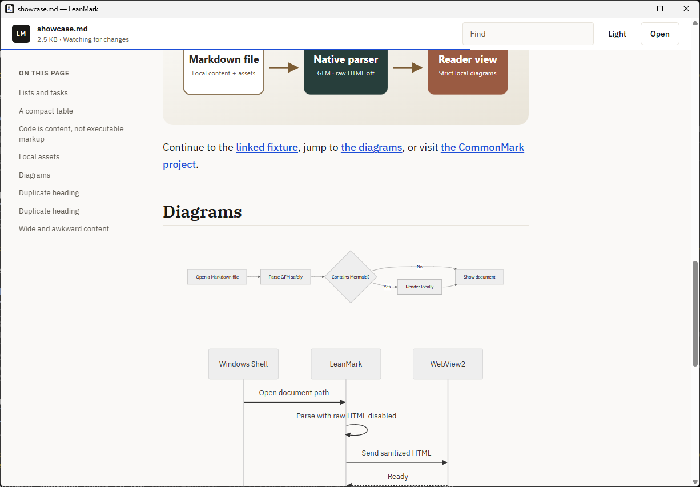
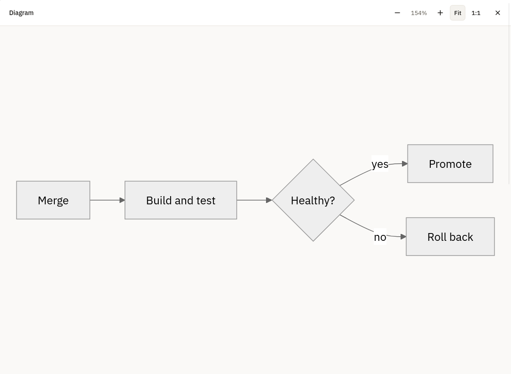

A read-only .md file viewer
A free Markdown viewer for Windows, Linux and macOS
Open the README, not the IDE.
Read .md files, GitHub-flavored Markdown, and Mermaid
diagrams offline in thin native hosts for Windows, Linux, and macOS.
Signing status: Windows is unsigned. The macOS preview is ad-hoc signed but not notarized. Platform notes accompany every artifact.

Measured release facts
- 3
- Native desktop platforms
- ~74 ms
- Windows baseline: native window visible
- ~97 MiB
- Windows baseline: full-process peak private memory
- MIT
- Free to use, inspect, and improve
The reading workflow
A document opens as a document.
LeanMark turns a Markdown file into a calm reading surface without project indexing, editor panes, extensions, or workspace management.
- CommonMark plus GFM tables, tasks, autolinks, and strikethrough
- Automatic outline, find, print, themes, and reading progress
- Page zoom in fixed steps from 50% to 300%, remembered between launches
- Relative local images and Markdown links
- Live refresh after the file changes on disk
# Release path
The viewer stays focused on
the current document.
```mermaid
flowchart LR
File --> Parse --> Read
```Offline diagrams
Mermaid stays with the document.
The release includes its Mermaid renderer. Diagrams work without an active connection, and the library is loaded only when the document contains a Mermaid fence.
LeanMark is explicit about its architecture: one portable C++ parser feeds native Win32, GTK, and AppKit hosts. Each host uses the operating system web runtime for selectable text, printing, images, and diagrams.
New in 0.4.0
Any diagram, as large as it needs to be.
A small button in the corner of every Mermaid diagram and image opens it across the whole window, fitted and sharp.
- Zoom from 10% to 800% with + and -, or Ctrl+wheel at the pointer
- 0 fits the window, 1 shows actual size, arrows and drag pan
- Escape returns to the exact place in the document

Measured, not magical
Small package. Honest runtime cost.
System web runtimes stay outside LeanMark's packages, but renderer, GPU, and utility processes still use memory. Package size is not the same as total footprint.
The published figures below are a Windows 11/WebView2 baseline. Hardware, system state, runtime version, and document complexity affect results; Linux and macOS measurements are not inferred.
Read the measurement method- 4.17 MiB
- Windows staged application payload
- 74.15 ms
- Windows native window visible, simple document
- 96.79 MiB
- Windows peak private memory, full app tree
Practical guards
Local Markdown is treated as untrusted input.
LeanMark narrows what a document can do, then verifies those boundaries against hostile fixtures.
Read the security policy- Raw HTML disabledMD4C renders Markdown without activating embedded HTML.
- Strict local page policyA Content Security Policy limits scripts and resources.
- Remote content blockedRemote images, downloads, popups, and permissions are denied.
- External links leave the readerHTTP, HTTPS, and mail links go to the operating-system handler only after a click.
Platform releases
Native packages for three desktops.
GitHub Releases provides a Windows x64 ZIP, an Ubuntu 24.04 / Debian-compatible x86-64 package, and one Universal 2 macOS preview for Intel and Apple silicon.
Windows x64 · Ubuntu 24.04 / Debian-compatible x86-64 · macOS Universal 2 preview
winget install abooodbah.LeanMark
winget install --id 9MSS4WKJ22ZV --source msstore
choco install leanmark -y
LeanMark is also in the Microsoft Store. The Store build is signed by Microsoft, so Windows installs it without the SmartScreen warning that the GitHub ZIP can show. The Chocolatey package installs the portable build; a new version reaches it once Chocolatey's moderators have approved it.
-
01
Windows x64
Portable ZIP with optional per-user Default Apps integration, also available through winget.
-
02
Linux x86-64
Debian package with declared GTK 4 and WebKitGTK 6.0 dependencies.
-
03
macOS universal preview
One AppKit bundle for Intel and Apple silicon, ad-hoc signed and not notarized.
Questions
Reading Markdown files on the desktop
How do I open an .md file on Windows?
Install LeanMark from the Microsoft Store, with winget install abooodbah.LeanMark, or from GitHub Releases, then open the file. Headings, tables, task lists, local images, and Mermaid diagrams render as a formatted page.
How do I read a Markdown file that Claude, ChatGPT, or a coding agent saved?
Open the .md file in LeanMark. When the file changes on disk, the page refreshes and keeps your approximate reading position, so you can keep it open while the file is being written.
Does it work offline?
Yes. Everything renders on your computer with bundled libraries and fonts. Remote images are not loaded, and LeanMark's own code makes no network requests. On Windows, the WebView2 runtime that draws the page can contact Microsoft on its own.
Can I edit Markdown?
No. LeanMark is a viewer. Use your editor to write and LeanMark to read.
Does it support Mermaid diagrams?
Yes, rendered offline by the bundled Mermaid library. Any diagram or image can be expanded to the full window, with zoom from 10% to 800% and panning.
Is LeanMark free?
Yes. It is MIT licensed and free on GitHub, the Microsoft Store, winget, Chocolatey, Scoop, and Homebrew.
How heavy is it?
Measured on Windows 11 with 0.3.0: about 74 ms to a visible window and about 97 MiB peak private memory for the whole app, including WebView2. The Windows application payload is 4.17 MiB. Linux and macOS are not measured yet.
Is raw HTML in a document run?
No. Raw HTML is disabled, and a strict Content Security Policy limits scripts and resources.
Android
Help test LeanMark for Android.
LeanMark for Android is in a closed test on Google Play before its public release. Google needs testers who keep the app installed for 14 days. Use the Google account you have on your phone.
Then, on your phone, open the LeanMark tester page, tap Become a tester, and install the app from Google Play. If the page says the app is not available yet, Google is still reviewing the test; try again a day later.
The Lean family
Small viewers for local files
Each one opens a kind of file without the heavy application that usually comes with it, and none of them changes the file. The Lean Apps page lists all three with their install commands.
-
LeanMark
A Markdown viewer: read
.mdfiles and Mermaid diagrams offline, on Windows, Linux, and macOS. -
LeanDoc
A Word document viewer: read
.docxfiles without an office suite, on Windows, Linux, and macOS. -
LeanRows
A large CSV viewer: open CSV, log, and JSON Lines files too big for Excel on Windows without loading them into memory.
Privacy
Privacy policy
This program will not transfer any information to other networked systems unless specifically requested by the user or the person installing or operating it.
Network use
On Windows, LeanMark displays documents through Microsoft's Edge WebView2 runtime, which is not part of LeanMark. That runtime can contact Microsoft services on its own, as the README records, and its network use is governed by the Microsoft Privacy Statement.
Uninstall
On Windows, use Settings > Apps > Installed apps > LeanMark,
delete the folder of a portable copy, or run
winget uninstall abooodbah.LeanMark or
choco uninstall leanmark. On Linux, run
sudo apt remove leanmark. On macOS, move LeanMark.app
to the Trash.
Built in public
Useful tools get better through real documents.
LeanMark is early, public, and MIT licensed. Compatibility reports based on real, non-private Markdown documents are welcome, especially documents containing Mermaid diagrams.